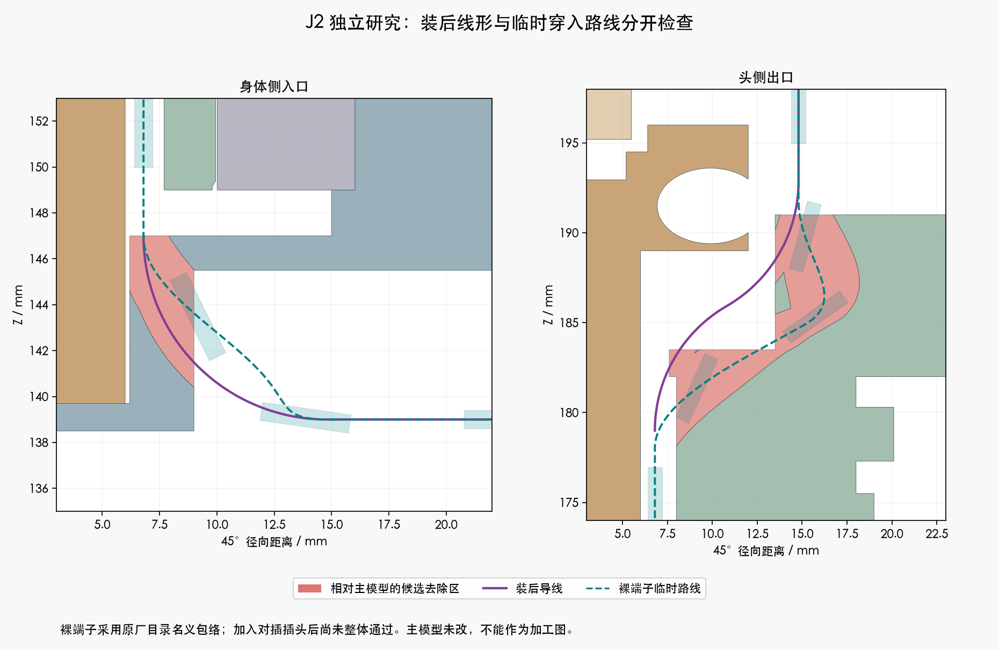
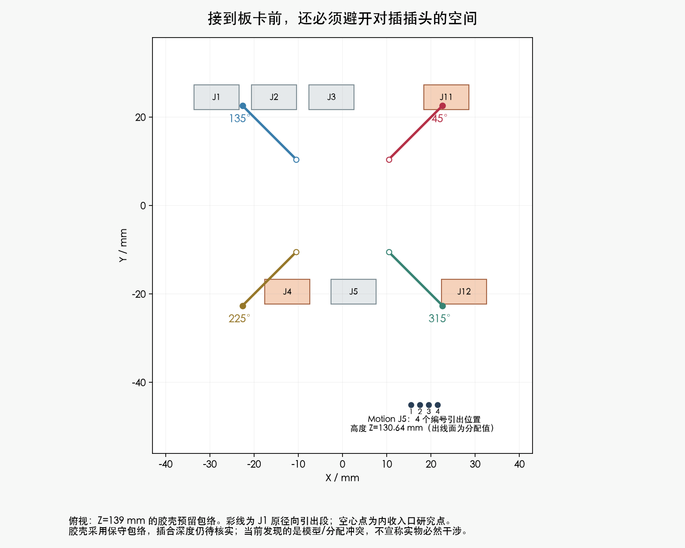

独立研究J2 · 主模型M1.47未改 · 未采用、未发布加工。加入对插包络后的检查仍为BLOCKED。
最新补充：原厂互配尺寸已复跑。名义包络通过、上界分配仍未通过。查看原厂图和最新复核；下方首次J2结果保留为历史。
| 已完成 | 结果与范围 |
|---|---|
| 参考裸端子的连续穿入 | PASS：四个方向，对207个未改源物体和14根固定线；未含对插包络 |
| 两件候选打印件的网格 | 已清理并重载；单一闭合实体、无退化面。强度/薄壁未验证 |
| 装后局部线形 | PASS：对209源实体/代理，130个头部姿态 |
| 加入29个对插包络 | BLOCKED：三根径向引出段及四条端子穿入路线占用了保守插头空间 |
| 完整板端连接与固定 | BLOCKED：尚无四线成组连接、固定和完整加工长度 |


原来采用未扣除插合量的23.1mm保守空间。新找到的艾迈斯2025V1原厂图给出互配总长20.10±0.50mm，扣除板端焊脚后，板上名义高度17.10mm，独立极限上界17.90mm。仍需重建正确包络与焊接出线并复跑；当前结果不能解释成实物必然干涉。
四根线的板端过渡与固定、完整俯仰段、CAM实际插头、相机FPC、装入和拆卸时的软线、逐线下料长度。已有局部长度不能给供应商下料。
完整说明 · 独立研究Blender · 清理后复核 · 压接工艺资料